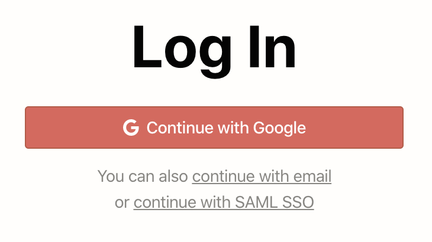
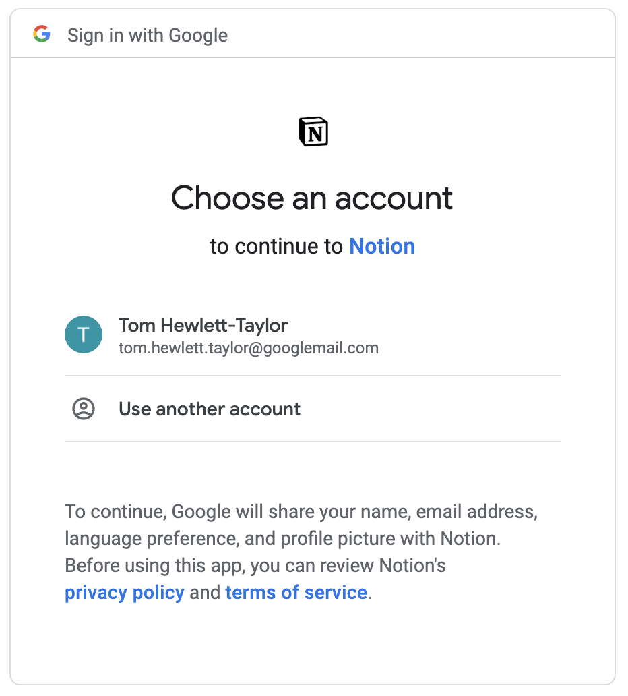
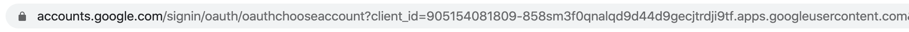
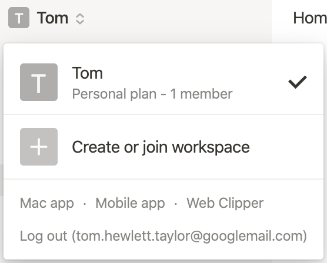
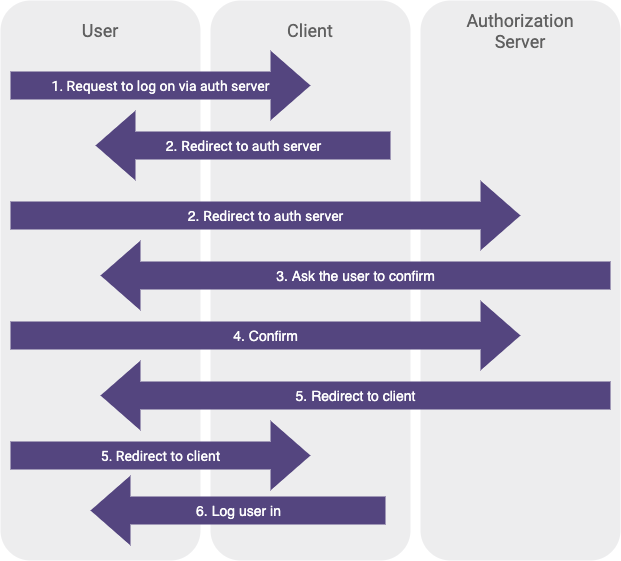
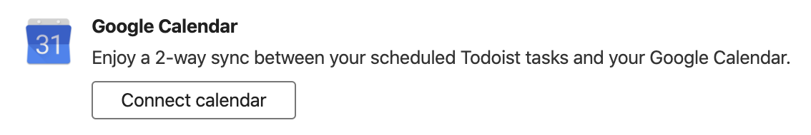
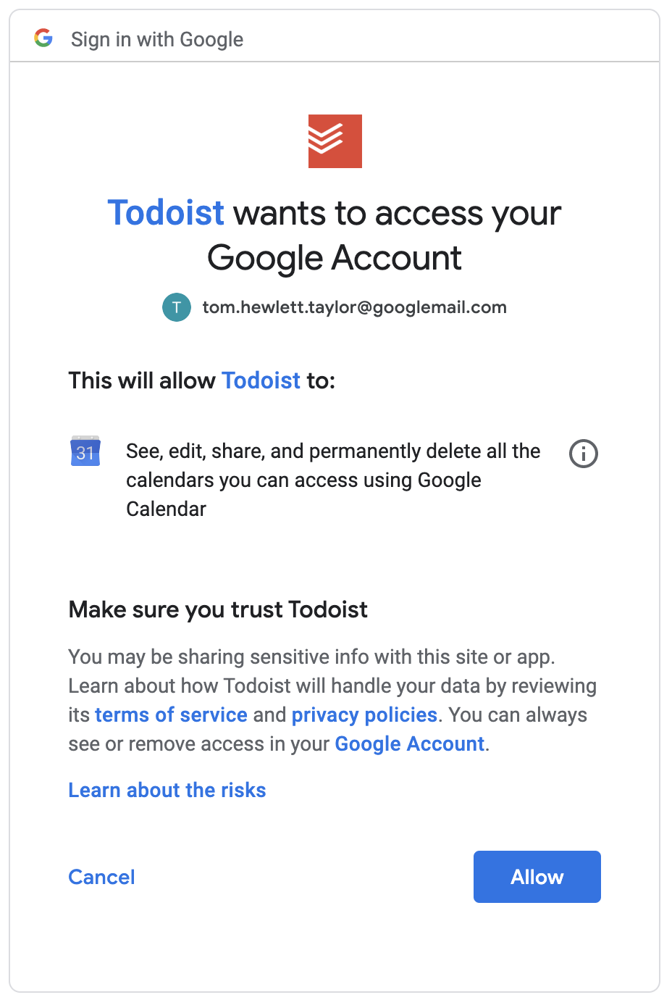

The first time I clicked “Sign in with Google” on another website, I was amazed. I thought “Is this magic?”
Then I thought “Is this safe?”
Signing in this way is convenient. It means one less registration form, one less password to manage. But what’s going on behind the scenes, and how do we know it’s secure?
It’s all powered by OAuth. OAuth is an open standard for access delegation. It’s what ensures these interactions can take place without us compromising our accounts.
With OAuth, you can let one app access your account on another app safely, without handing over your password.
Let’s go through an example, and look a little closer at what’s going on.
I will use the example of signing in to Notion with my Google account.
Notion is an all-in-one workspace app that combines features of wikis, databases and project management tools. This is what the Notion login page looks like:
If I click “Continue with Google”, a new browser tab opens, showing this:
My browser has been redirected to a page where Google asks me which account I want to use with Notion.
The address bar shows this is a Google page:
I’m signed in to Google, so Google knows which account to show. Notion can’t see what is happening on this page.
Note the text that says “Google will share your name, email address, language preference and profile picture with Notion.”
If I click my account, I’m redirected back to Notion, where I am signed in. If I look at the Notion menu, I can see my email address. I’ve never shared my email address directly with Notion, so it must have got it from my Google account.
Hurrah.
In this example, I was directed back and forth between Notion and Google, with various information being exchanged along the way. These redirects and exchanges make up the OAuth flow.
If we call Notion the client and Google the authorization server, the flow seems to be made up of the following steps:
Here’s the flow in diagram form:
Steps 5 and 6 seem a bit troubling though. When a browser redirect happens, the site you’re redirecting to has no guaranteed way of knowing where you redirected from.
In step 6, Notion seems to accept some profile information and use that to log a user in, but it can’t guarantee that information came from Google.
We could replace step 5 with the following:
And Notion would have no way of knowing the redirect wasn’t coming from Google.
At first glance, this all seems terribly insecure.
Actually, there’s a bit more going on behind the scenes. The information is passed between the parties in a very specific way, and there are a couple of extra hidden steps in the flow.
The steps in the flow, plus the precise format of information transfer, is what makes up the OAuth standard, and what turns a seemingly insecure system into a watertight one.
Let’s look in more detail.
Prior to any of this taking place, Notion had to register itself with Google. This is a one-time thing that happens when an app like Notion is being initially developed.
Any developer is free to develop an app and register it with Google.
Once it has registered, Google issues Notion two pieces of information: the client ID and the client secret. These will both be specific to Notion.
The client ID is just a unique ID that represents Notion. We can see it in the URL on the Google page we looked at earlier:
It’s this ID that signals to Google that we’re dealing with Notion rather than some other app, and it prompts Google to show the Notion logo on the account selection page (Notion would have provided its logo to Google when it was registering).
When Notion first redirects the user’s browser to Google, it passes this ID in the URL.
The client ID is public information. Of course it is; you can see it in your browser. This means Google can’t guarantee the redirect has come from Notion. But at this point, it doesn’t need to. It just needs to know that the request is for Notion.
The client secret, on the other hand, is private information, only known by Notion and Google. That gets used a little later in the flow.
We’ve seen that Notion redirects me to Google, passing the client ID. I then select and authorise my account on the Google page, before being redirected back to Notion, where I am logged in.
It seems like that final redirect from Google to Notion must contain some sort of “go ahead” to log me in, as well as account details such as my email address.
But actually there’s more going on. All that redirect contains is an authorization code for me.
The presence of the code tells Notion that the user in question (me, although Notion still doesn’t know it’s me) has authorised their Google account.
But the code doesn’t contain my email address, or anything about my account. The contents of the code is meaningless to Notion.
This is what the flow looks like so far:
That’s clearly not enough at this point. Notion doesn’t know who I am to log me in. Notion also can’t guarantee that the authorization code really came from Google, as it was sent via a redirect, and similarly Google can’t guarantee that the authorization code made it to Notion without being intercepted.
This is where the client secret comes in. Notion then makes a server-side request to Google, sending both the authorization code and the client secret.
Because it’s a server-side request, Notion knows it’s talking to Google, and because it sends the client secret, Google knows it’s Notion. Notion can now verify with Google that the authorization code is actually valid.
At this point, Notion still doesn’t quite know who I am, but all 3 parties are now in agreement that Notion should have permission to know.
When Notion makes its server side request to Google, containing the authorization code and the client secret, Google responds with an access token.
An access token is what allows Notion to access my information from Google.
Notion can make a request to Google using this access token, and as long as it’s something I gave permission for Google to do back during the authorization step, Google will oblige. In this case, that includes handing over my email address.
The access token can be used again and again. It gets stored in my Notion cookies (or at least a reference to it does), so the next time I visit Notion, I can be logged in without having to go through the authorization process again.
Putting it all together, this is what the flow looks like:
In the Notion and Google example, OAuth was just used for authentication.
Authentication means validating that somebody is who they claim to be.
But OAuth is more powerful than that; in general it’s used for authorization.
Authorization means giving someone permission to do particular things.
OAuth is used to authorize a client to interact with an authorization server on a user’s behalf. That interaction could be many different things.
During authorization, when I hit the Google page where I selected my account, I had to agree what Notion would get access to: in this case, my name, email address, language preference and profile picture.
But, if Notion had wanted, it could have requested that I grant other permissions too, such as sending emails on my behalf, or editing my calendar.
One real example where these kinds of permissions are required is Todoist’s integration with Google Calendar.
Todoist is a cross-platform task management app.
In Todoist, there is an option to enable a 2-way sync with Google Calendar, so tasks created in Todoist will show on your Google Calendar.
After clicking this button, the OAuth flow begins, and you’re taken to a familiar Google page, but this time you need to grant a more invasive set of permissions:
For this integration, those permissions are needed. Todoist needs to be able to write to your calendar so it can create tasks there.
And that’s all doable with the same OAuth flow we looked at before. The process is the same, we just grant more permissions.
Todoist then uses its access token to perform actions using the Google Calendar API.
I’ve given a very basic overview of OAuth, but skipped over a lot of the detail.
For instance, I’ve not talked about OpenID Connect and it’s relationship with OAuth.
And I’ve not mentioned that, rather than just access tokens, connecting apps often need to use a mix of access tokens and refresh tokens.
For a deeper dive that covers these topics and more, I recommend the guide on oauth.com.
If you’re a developer that wants to actually implement this stuff, there are many guides and toolkits at your disposal, that depend on your language, and also whether you want your app to be the client or the authorization server in the OAuth flow.
Here are a few resources for some common use cases:
Lastly, if you’re interested, I highly recommend two of the apps I mentioned in this guide, Notion and Todoist.
If you were thinking of signing up for either, please consider using any of the links in this article, which are referral links. Using these links earns me credit towards my subscriptions to both apps. Since I use these apps to plan posts like these, you would be supporting the blog and helping me write more posts in future. Thanks!